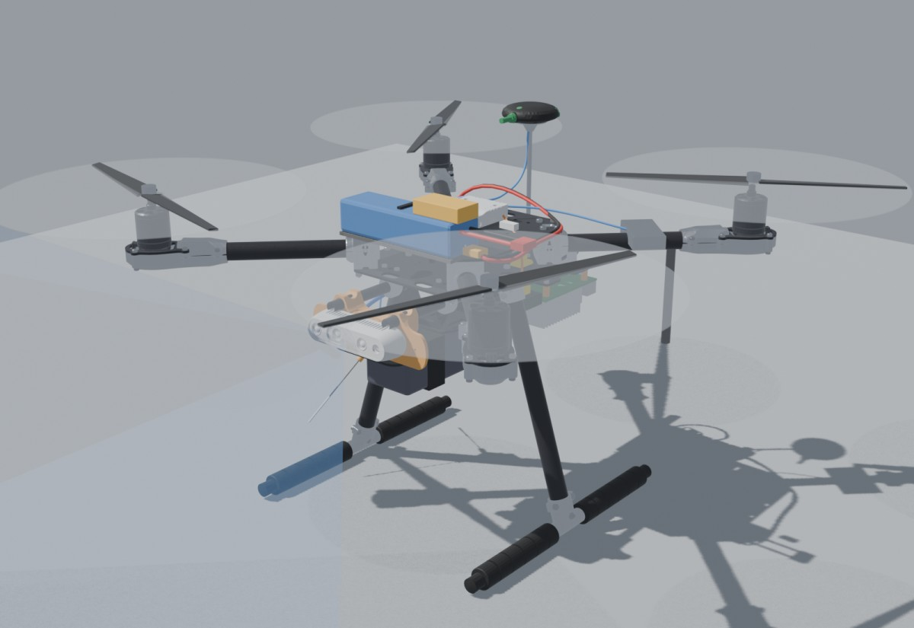
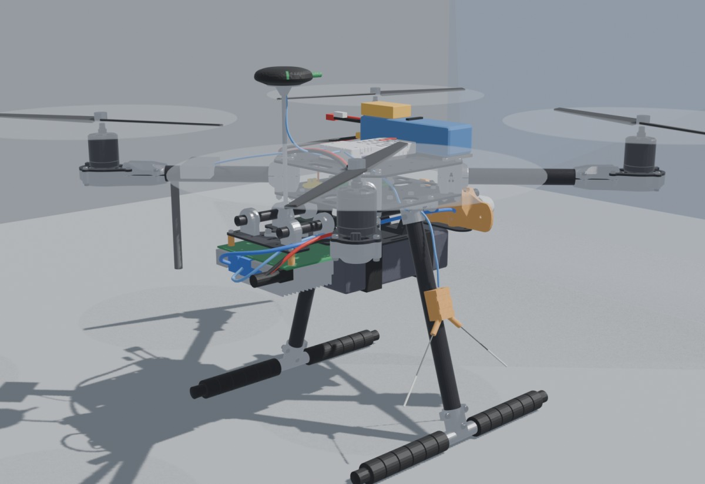
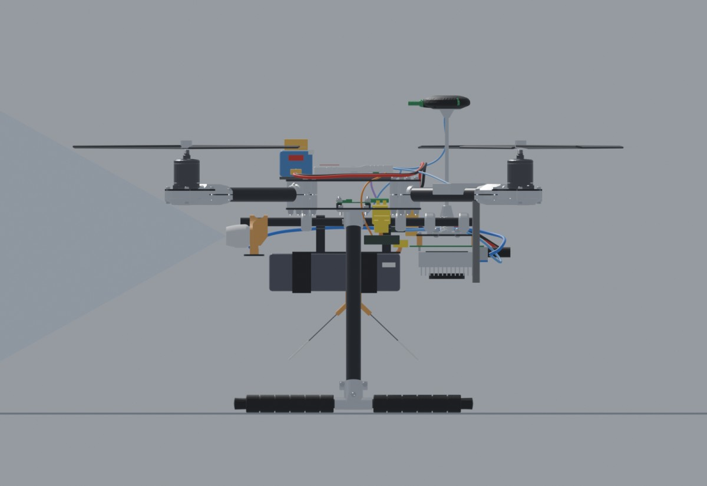
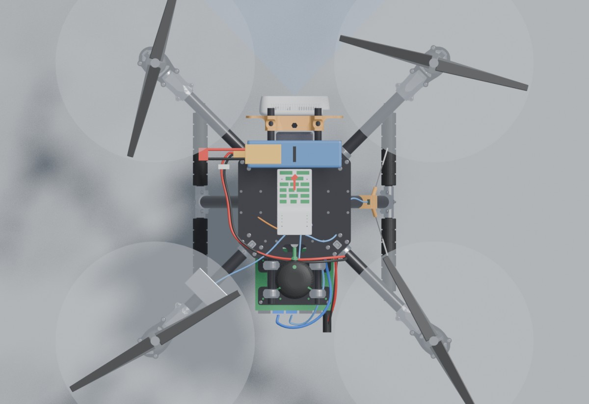
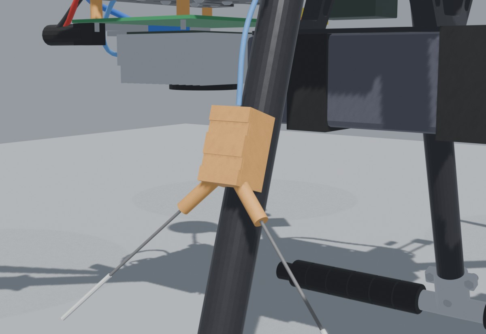
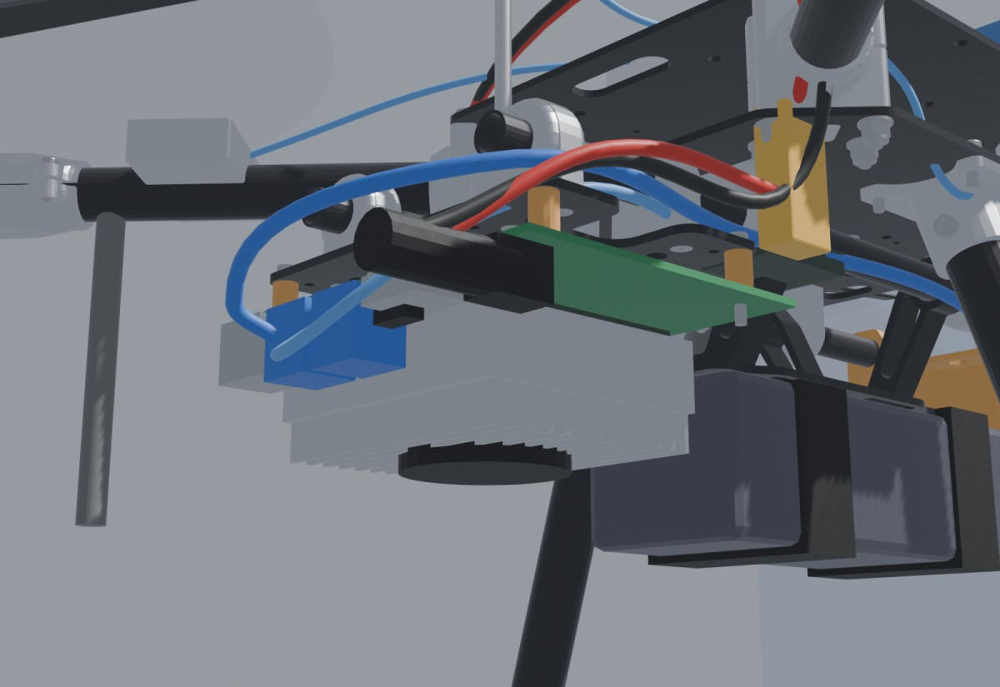

Every part on the drone, how it connects, and where it goes. It covers what we own, what's on the shopping list, and what we have to make ourselves. Each connection was checked against the part's datasheet or pinout and against what our code expects (c++/gazebo-sim branch, PX4 v1.17). Every product, datasheet and code link is in Parts and links and References.
Ordered 4 Nov 2026. elefun order 1280826 comes as a letter parcel with Posten (not trackable). Proshop order 70193376 goes to the PostNord locker at Rema 1000 Havstein and ships 9–11 Nov (the DeLOCK plug comes from their remote warehouse).
| Item | For | Shop | Qty | kr |
|---|---|---|---|---|
| Bronto adapter, male Deans → female XT60 | Charging the Jetson battery on the e450 | elefun | 1 | 59 |
| Bronto T-Plug (Deans), 3× male | Jetson power lead, battery end | elefun | 1 | 29 |
| Bronto silicone wire 18 AWG, 1 m red + 1 m black | Jetson power lead | elefun | 1 | 39 |
| Buzzer 2s–8s LiPo alarm & voltage tester | Low-voltage warning on the Jetson battery | elefun | 1 | 95 |
| Fuse heat-shrink 5 mm, 2 m | Jetson lead joints, XM+ joints | elefun | 1 | 45 |
| Bronto heat-shrink 2 mm, 2 m | Small joints on the TELEM2 crossover cable | elefun | 1 | 36 |
| Panasonic FM 35 V 470 µF low-ESR capacitor | Across + and − in the plug's terminal: damps the plug-in voltage spike | elefun | 1 | 12 |
| Intenso Premium 250 GB NVMe, M.2 2280 | Jetson storage (no storage in the dev kit box) | Proshop | 1 | 676 |
| DeLOCK terminal block → 5.5 × 2.5 mm DC plug (male) | Jetson end of the power lead | Proshop | 1 | 70 |
| elefun 315 + 49 shipping, Proshop 746 (free shipping) | 1 110 | |||
Replaces the Biltema blade-fuse holder, which was sold out in every Trondheim store. One of each was in stock on 4 Nov; reserve with "Hent i butikk". 3.15 A slow is just as good; never 5 A, and avoid fast (F) fuses.
| Item | For | Shop | Qty | kr |
|---|---|---|---|---|
| Sikringsholder 5 x 20 mm (41107) | Inline fuse holder, 2 × 12 cm 1.25 mm² leads, max 5 A | Kjell | 1 | 9 |
| Glassrørsikring 5 x 20 mm 4 A Trege (T), 10 pcs (36927) | Fuse for the Jetson lead, plus spares | Kjell | 1 | 39 |
| Item | Why not |
|---|---|
| Biltema midi holder + 3 A blade fuses | Holder sold out in Trondheim; replaced by the Kjell glass-fuse holder |
| LiPo-safe bag | Packs live in a (not airtight) metal box and are charged supervised on concrete with sprinklers |
| 2× 18650 for the Pocket | The drone already flies |
| M2.5 × 18 screws, M2.5 locknuts | Sourced locally. The frame kit has 4 × M2.5 locknuts, M2.5 × 12 screws and 5 mm standoffs, but 12 mm is too short with the 10 mm printed spacers |
| USB-A → USB-C cable | Only if the converter's "Type-C USB cable" turns out to be C-to-C; we'll find one |
| microSD card | The NVMe SSD replaces it |
| Item | Role |
|---|---|
| Holybro X500 V2 PX4 dev kit (433 MHz) | Frame, PDB, ESCs, motors, props, Pixhawk 6C + cable set, PM02 V3, M10 GPS, SiK pair, platform board |
| Holybro UART to USB converter | Pixhawk TELEM2 to Jetson USB |
| NVIDIA Jetson Orin Nano Super dev kit | Companion computer, 19 V PSU in the box |
| Intel RealSense D435i | Camera, USB 3 cable in the box |
| RadioMaster Pocket CC2500 LBT | RC transmitter |
| FrSky XM+ 16ch SBUS receiver | RC receiver |
| Sunpadow 4S 5200 mAh 110C, XT60 | Flight battery |
| 4S 2200 mAh 35C, Deans | Jetson battery |
| SkyRC e450 | Charger |
Orders and stock updated 4 Nov 2026. The original vendors and reasoning are in the build sheet. Tools we need but aren't buying: soldering iron, solder, multimeter.
The 4S Jetson battery goes straight into the barrel jack. No 19 V converter. NVIDIA's carrier board specification (SP-11324-001 v1.3, Dec 2024) says "DC Jack: 9-20 V (19V supply provided)" (p. 3) and "Max current supported is 3.5 A", 5.5 × 2.5 mm, centre positive (§3.8, p. 26). The board's own regulator (GS9230) turns that into 5 V for the module (p. 31). A 4S pack is 12.0–16.8 V, inside the range at both ends. The 19 V figure is just the adapter in the box. Three things this adds: a 470 µF capacitor at the plug against the plug-in spike, camera and UART converter on different USB stacks (each stack's 5 V is rated 0.5 A in table 5-3), and 25 W mode in flight.
A straight Pixhawk cable from TELEM2 to the UART-to-USB converter won't work. The converter's 6-pin port uses the same pin order as the Pixhawk (5V, TX, RX, CTS, RTS, GND), so a straight cable joins TX to TX and RX to RX. It also ties the Pixhawk's 5 V to the Jetson's USB 5 V. Make the crossover cable below: TX and RX swapped, CTS and RTS swapped, and pin 1 (5 V) left unconnected, as in PX4's own TELEM2 wiring table (see the converter pinout).
The Jetson setup guide uses the wrong serial port. docs/jetson.md:166 and scripts/jetson/install-user.sh:69 start the PX4 agent on /dev/ttyTHS1, the Jetson's header UART. With the converter it's /dev/ttyUSB0, as docs/hardware.md and docs/architecture.md already say.
Use Holybro's own depth-camera mount, level. Then update the sim camera pose. In the 3D model no propeller enters the D435i's depth or colour view with that mount, so no tilt is needed. The real camera sits 0.135 m forward and 0.044 m below the frame centre. The sim model has 0.12 m forward and about 0 m. Put the measured numbers into model.sdf and the TF.
There's no launch file for the real drone yet. Only sim.launch.py and sim_cpp.launch.py exist. On the drone, three things have to run together: the XRCE agent on the serial port, the realsense2_camera node, and the cogidrone node with the remap /camera/image → /camera/camera/color/image_raw. Copy that remap from sim_cpp.launch.py:69.
The two power systems share only one ground wire, pin 6 of the TELEM2 cable. The serial link needs that ground, and it's safe. Never join the 5 V lines.
| From | To | Cable / connector | Electrical | Software / setting | Status |
|---|---|---|---|---|---|
| Flight battery | PM02 V3 | XT60 | 4S, 14.8–16.8 V | BAT1_N_CELLS = 4, calibrate V/I in QGC | have |
| PM02 V3 | PDB | XT60 (kit) | full pack current | — | have |
| PM02 V3 | Pixhawk POWER1 | 6-pin (kit) | 5.2 V supply + analog V/I | analog PM is correct for 6C (not PM02D) | have |
| PDB | 4× ESC | XT30 (pre-installed) | 20 A ESCs | — | have |
| Pixhawk PWM 1–4 | ESC signal | kit cable | PWM / DShot | QGC → Actuators, Quad X order, props off | have |
| Pixhawk GPS1 | M10 GPS + compass | GH 10-pin (kit) | 5 V from Pixhawk | compass cal with Jetson running | have |
| Pixhawk TELEM1 | SiK air radio | GH 6-pin (kit), straight | 5 V from Pixhawk | MAV_0_CONFIG = TELEM1, 57600 (default) | have |
| SiK ground | Laptop | USB (kit) | USB power | QGroundControl auto-connects | have |
| Pixhawk RC IN | XM+ pads | kit RC cable, cut + solder 3 wires | 5 V, GND, SBUS | Pocket on FrSky X2 (LBT), XM+ SBUS mode, check sticks in QGC → Radio | make |
| 2× 18650 | battery bay | charges over USB-C | — | have | |
| Pixhawk TELEM2 | UART→USB GH 6-pin | crossover GH 6-pin (from a spare kit cable) | 3.3 V logic, pin 1 open | UXRCE_DDS_CFG=TELEM2, SER_TEL2_BAUD=921600, UXRCE_DDS_DOM_ID=0, MAV_1_CONFIG≠TELEM2 | make |
| UART→USB | Jetson USB-A ① | included Type-C cablefind a C→A cable if it is C-to-C | USB 2 is enough | xrce-agent serial --dev /dev/ttyUSB0 -b 921600, user in dialout | check |
| Jetson USB-A ② | D435i | box cable, USB-C → A, USB 3 | ~0.7 A from Jetson | realsense2_camera → /camera/camera/color/image_raw; rs-enumerate-devices must say USB 3.x | have |
| Jetson battery | Jetson DC jack | male Deans → 4 A slow glass fuse → DeLOCK 5.5×2.5 | 12.0–16.8 V into the 9–20 V jack, ≈ 2.0 A at 14 V, 2.3 A empty. 470 µF at the plug | 25 W power mode in flight (avoid MAXN SUPER on battery) | make |
| Jetson battery balance | Buzzer | JST-XH 5-pin | — | set alarm to 3.5 V/cell | buy |
| e450 | Flight battery | XT60 lead + XH balance | ≤ 4 A, ~1.5–2 h | LiPo, 4S, balance charge | have |
| e450 | Jetson battery | XT60 lead → Deans adapter + XH | 2.2 A (1C), ~1 h | LiPo, 4S, 2.2 A | buy |
| Jetson M.2 2280 slot | NVMe SSD | M.2 Key M | PCIe 3.0 x4 | Install JetPack with the Jetson ISO on a USB stick, SSD as target | buy |
Cut the connector off one end of the kit's RC cable (it needs ≈ 25 cm; splice with a spare kit cable if shorter). Solder 5V, GND and SBUS to the XM+ pads and heat-shrink the three joints. Put the receiver in the printed pole case (hardware/3dprint/xmplus_pole_case.stl + lid) instead of wrapping it in wide heat-shrink, feed the antennas through the two guides, and zip-tie it to the right landing-gear pole. Bind with the Pocket on FrSky X2 (LBT) and check the sticks in QGC → Radio.
Holybro sells the depth-camera mount separately (per the dev kit page), so print it from their 3D-print zip. The D435i bolts on with two short M3 screws on the 45 mm pattern (holes "B"). The Jetson hangs on four printed 10 mm M2.5 spacers. The dev kit's two Wi-Fi PCB antennas are clipped, not glued, to the plastic base: slide each outward and lift, then fit them to a printed antenna mount. Our files are in hardware/3dprint/ (XM+ pole case and lid, Jetson spacers). Print in PETG.
Built in Blender from Holybro's official STEP files for the X500 V2 frame (including their depth-camera mount), the Pixhawk 6C and the GPS, and from Intel's D435 mesh in realsense-ros. The Jetson, batteries and small parts are modelled from their published dimensions. The model is hardware/blender/cogidrone_x500.blend.






| Part | Where | Why there | Checked in the model |
|---|---|---|---|
| Pixhawk 6C | Top plate centre, on its foam pad, arrow forward | Standard X500 position, centred over the CG | Fits between the plate screws |
| Jetson Orin Nano | Upside down under the rear platform board on the 58 × 86 mm holes, on four printed 10 mm spacers with M2.5 × 18 screws (the kit's M2.5 × 12 are too short) and the kit's M2.5 locknuts. Heatsink down, ports to the rear | Holybro's own companion-computer suggestion. The 10 mm spacers clear the M.2 slots and Wi-Fi card under the carrier. Ports reachable from behind | 10 mm from the flight pack, 142 mm above the ground |
| GPS mast | Kit position, on top of the same platform board | Holybro's own layout | GPS sits 135 mm above the Jetson, well clear of its USB 3 noise |
| Jetson battery 4S 2200 (120 × 35 × 28) | Across the front edge of the top plate, foam pad + strap | Balances the Jetson at the rear. Short lead to the front, buzzer on top | Clear of props and of the Pixhawk (2 mm) |
| Flight battery 4S 5200 (139 × 47 × 40) | Kit strap mount under the rails, centred 20 mm forward | Rear end clears the Jetson; front end clears the camera mount | 129 mm above the ground |
| D435i | Holybro's depth-camera mount on the front ends of the rails, level | Holybro designed it for this camera and frame | 0 prop points in the depth or colour view (540 sample points per prop disc), with or without a 10° tilt down |
| XM+ receiver | Right landing-gear pole, 45 % down, in the printed pole case, antennas pointing down in a 90° V | Best of 22 spots scored in the model: 95 % clear view toward the ground, ~10 cm from the Jetson's USB 3 / Wi-Fi, 27 cm from the SiK | No collisions; RC cable ≈ 25 cm with slack |
| SiK air radio | Rear-left arm, antenna pointing down | Opposite side from the XM+, short cable to TELEM1 | — |
| UART-to-USB | Zip-tied to the right rail, next to the Jetson | Short USB lead to the Jetson's rear USB-A port | — |
Centre of gravity from the off-centre masses: about 2 mm forward of the frame centre, all-up weight about 2.2 kg. The Jetson dev kit mass (176 g) and frame kit mass (1050 g) are estimates, so still do the two-finger balance check on the real drone. The Orin Nano carrier's holes should match the platform board's 58 × 86 mm Jetson Nano pattern; measure centre to centre before drilling or ordering. Removing the dev kit's plastic base frees the carrier but the Wi-Fi antennas are stuck to the base: re-stick them on the platform, and keep Wi-Fi on 5 GHz or off in flight so it doesn't interfere with the 2.4 GHz RC link.
| What the code expects | Where | Hardware reality | Result |
|---|---|---|---|
/fmu/out/vehicle_status_v1, vehicle_local_position_v1; /fmu/in/offboard_control_mode, trajectory_setpoint, vehicle_command | src/controller/pixhawk.cpp | PX4 v1.17 on the Pixhawk publishes these _v1 names, matching px4_msgs release/1.17 | matchflash v1.17 |
| XRCE agent over UDP (sim) / serial (drone) | docs/architecture.md:167 | FT231X → ftdi_sio → /dev/ttyUSB0, 921600 is within the chip's 3 Mbaud | match |
/dev/ttyTHS1 | docs/jetson.md:166install-user.sh:69 | We don't use the header UART | fixchange to ttyUSB0 |
User in dialout | install-system.sh:90 | Needed to open ttyUSB0 without sudo | match |
Camera on /camera/camera/color/image_raw | detector.py:45gz_bridge.yaml | realsense2_camera default namespace and name are both camera | match |
C++ core subscribes /camera/image | sim_cpp.launch.py:69 | Needs the same remap in a real-drone launch file that doesn't exist yet | to do |
| Depth as 32FC1 metres (sim) | model.sdf:7 | D435i publishes 16UC1 millimetres | to dowhen depth is used |
camera_link 0.12 m ahead, ~0 m above base_link | model.sdf:16 | Real mount lower and tilted to keep props out of view | to domeasure, update pose |
| RC joystick in sim via USB | docs/jetson.md:149 | Pocket over USB-C data cable on the sim box; on the drone it uses RF to the XM+ | match |
| MAVLink on TELEM2 ("Onboard") | build sheet | Code uses uXRCE-DDS on TELEM2, not MAVLink | ignore sheetfollow hardware.md |
sudo tegrastats with the camera streaming: no reboot, fuse not warmls /dev/serial/by-id/ shows the FTDI device; agent running on ttyUSB0ros2 topic list on the Jetson shows /fmu/out/vehicle_status_v1rs-enumerate-devices reports USB 3.x for the D435i, plugged into the other USB stack from the UART converter